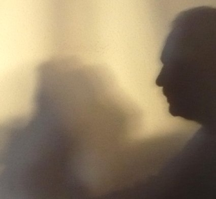

No-Biografía incorporada en el libro "8 maneras de contar", de la Editorial SM.

Creo que las biografías están bien, si acaso, para cuando uno está muerto, lo que no es el caso de momento y a pesar del arranque de lo que vendrá en la página siguiente.(1) Si alguien quiere leer algunas biografías literarias, ahí están como modelos la de Melville, la de Mark Twain, la de Stevenson, la de Borges, la de Cortázar, la de McCarty, la de Defoe… No en todas me reconozco, pero sí en muchas de sus obras, que hace mucho o poco me hicieron vibrar.
Como dediqué parte de mi tiempo a impartir clases de matemáticas, diré que el año de publicación de este libro (2008) mi edad coincide con los dos últimos dígitos del año en que nací, del siglo pasado, evidentemente.(2)
Y, del resto, poco se puede contar. Leí desde muy niño. Mis padres me dicen que comencé a leer muy pronto, con menos de cuatro años y por culpa de un abuelo que me contaba historias peripatéticas y veraniegas por los campos de Castilla.
Comencé a escribir pasados los cuarenta, después de haber leído bastante, y casi diría que durante todo este tiempo de silencio me preparé para hacerlo, aunque ni siquiera pensaba en ello de joven. Ahora, la escritura me apasiona. No puedo vivir sin escribir o sin pensar en escribir, así que en cuanto tengo ocasión aprovecho para recomendar a jóvenes y a mayores que lo intenten. Descubrir la mirada del Otro, de los muchos Otros que nos componen, resulta algo apasionante.
Escribo sobre algunas cosas que me gustan y sobre otras muchas que me hieren. Me siento orgulloso de algunos de mis libros y cuentos, que me han proporcionado una docena de premios literarios y, sobre todo, muchas satisfacciones, como la de conocer a los colegas que componen este libro.(3)
Disfruto también del cine, la fotografía, la música, los paseos y, sobre todo, de mis dos hijos y de otras muchas personas que me quieren.
.
(1) Me refiero al capítulo del libro 8 maneras de contar; en él supongo nada menos que San Pedro y San Juan me preguntan cosas sobre mi escritura. Después de muerto. (¡Glabs!)
(2) La raíz digital del número buscado es 0, lo que corresponde con una no-biografía.
(3) También aludo al libro 8 maneras de contar, en el que estamos, evidentemente, ocho: Carlo, Antonio, Alfredo, Andreu, Gonzalo, Care, Jordi y yo.